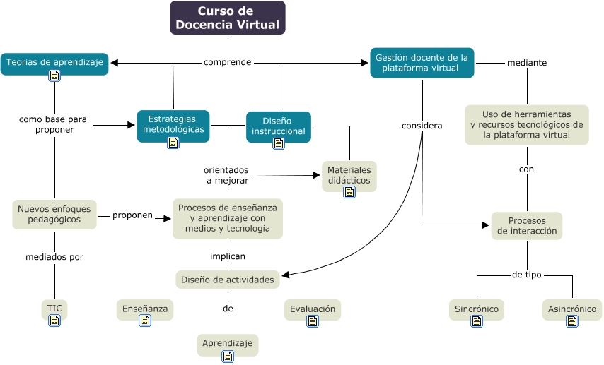

WARNING:
JavaScript is turned OFF. None of the links on this concept map will
work until it is reactivated.
If you need help turning JavaScript On, click here.
Este Cmap, tiene información relacionada con: mapa_curso_docencia_virtual.cmap, Gestión docente de la plataforma virtual mediante Uso de herramientas y recursos tecnológicos de la plataforma virtual, Diseño de actividades de Enseñanza, Estrategias metodológicas orientados a mejorar Materiales didácticos, Curso de Docencia Virtual comprende Gestión docente de la plataforma virtual, Gestión docente de la plataforma virtual considera Procesos de interacción, Diseño instruccional considera Diseño de actividades, Diseño de actividades de Aprendizaje, Gestión docente de la plataforma virtual considera Diseño de actividades, Curso de Docencia Virtual comprende Diseño instruccional, Procesos de enseñanza y aprendizaje con medios y tecnología implican Diseño de actividades, Estrategias metodológicas orientados a mejorar Procesos de enseñanza y aprendizaje con medios y tecnología, Teorias de aprendizaje como base para proponer Estrategias metodológicas, Gestión docente de la plataforma virtual considera Materiales didácticos, Teorias de aprendizaje como base para proponer Nuevos enfoques pedagógicos, Nuevos enfoques pedagógicos mediados por TIC, Diseño instruccional considera Materiales didácticos, Uso de herramientas y recursos tecnológicos de la plataforma virtual con Procesos de interacción, Procesos de interacción de tipo Sincrónico, Procesos de interacción de tipo Asincrónico, Curso de Docencia Virtual comprende Teorias de aprendizaje
